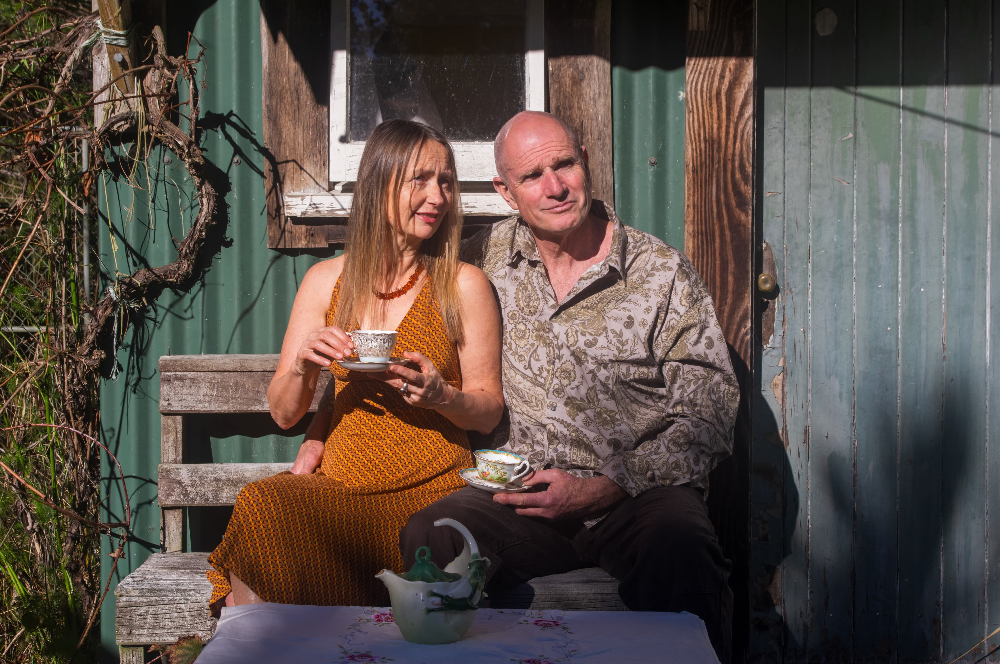
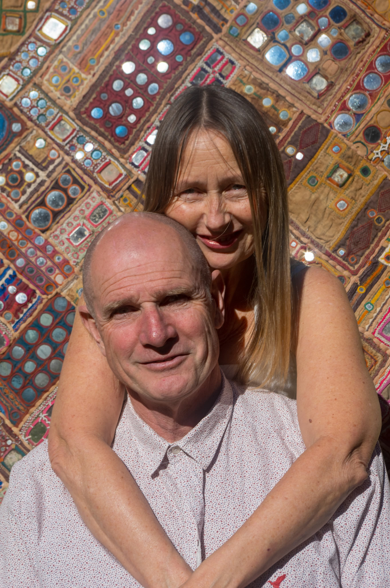
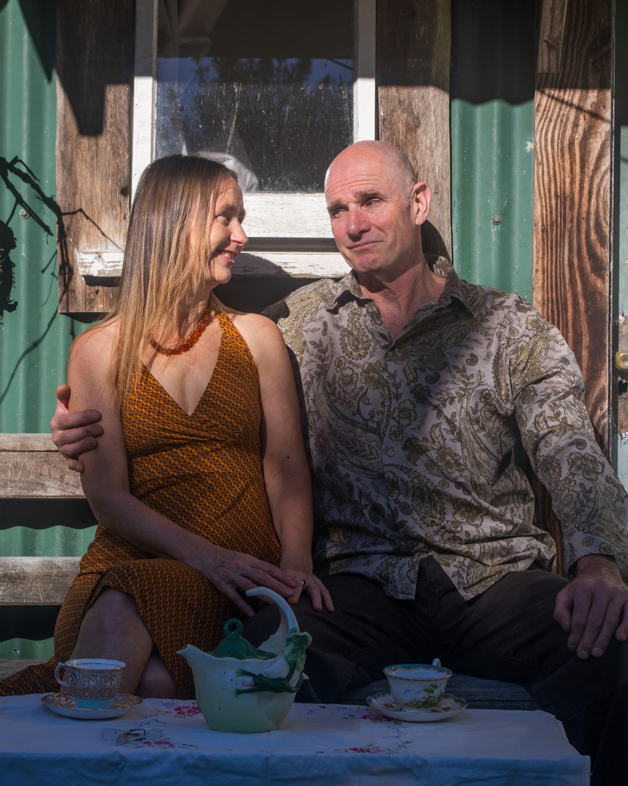

We celebrate the year of our 30th anniversary by getting married and are so excited to share our special day with our favorite people. Come journey with us into our enchanted garden and join in our celebration.
"I found it is the small everyday deeds of ordinary folk that keep the darkness at bay ..... small acts of kindess and love." Gandalf



*Note: The ceremony and reception will both take place outdoors under the forest canopy.
Please let us know if you can make it by December 15, 2026.
We invite you to dress in Forest Fantasy or Semi-Formal Garden attire.
After the ceremony join us for catered afternoon tea and drinks.
In the evening we will have a potluck meal and live music from local bands, with extra friends joining us for the party.
"If more of us valued food and cheer and song above hoarded gold, it would be a merrier world." Tolkien.
Parking
Parking is in the neighbouring paddock, western side of our property. Signs will be out.
Camping
Basic camping is possible in the neighbouring paddock, western side of our property.
Games anyone?
Garden games will be available such as giant Jenga, petanque, croquet, badminton, etc.
Lounge area
When in need of some downtime, we will have a lounge area with tea and coffee making facilities, couches and rugs.
Live evening music
We have fantastic local musicians lined up to entertain you into the night. The ceremony attendees will be joined by a wider crew of friends for a shared potluck feast from 6.30 and live music to follow.
Photo booth
There will be a photo booth pagoda and dress-ups available - make some memorable snaps to share later.
Creative sharing
We have put aside an hour for any guest's performative love contribution. Whilst it could be in the form of a very short speech, our ideal is for an offering of the performative variety. After afternoon tea, we have a space where we welcome sharing of the creative kind in the theme of love, connection & community, with a request for items to be no longer than around 4 minutes. Let us know if you have something short, sweet and suitably entertaining you'd like to share and we will add you to the list. There will be a guest book available to share any words on paper.
Offerings
Your presence is the greatest gift of all. After 30 years of feathering our hobbit-hole, we have no need for gifts. Please bring your delightful self, your loving spirit and a plate of feasty food to share for dinner.
"May the wind under your wings bear you where the sun sails and the moon walks." J.R.R. Tolkien
Please enter the password found on your invitation to view our website details.